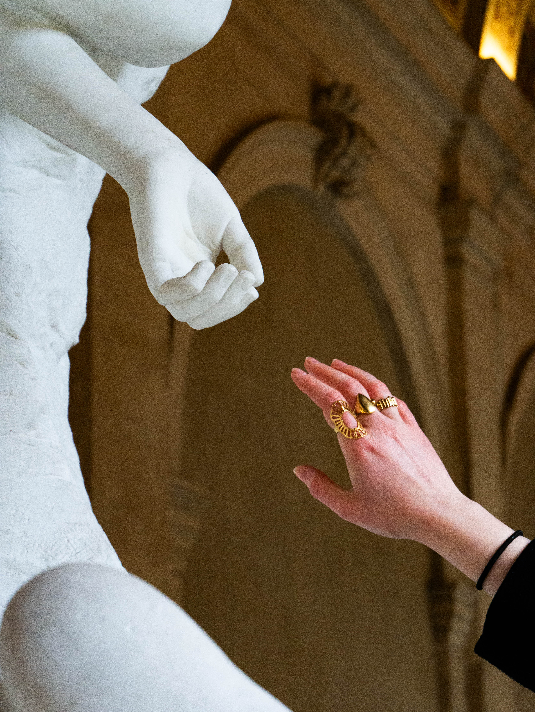
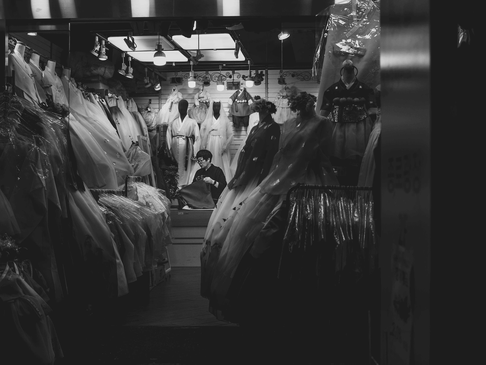
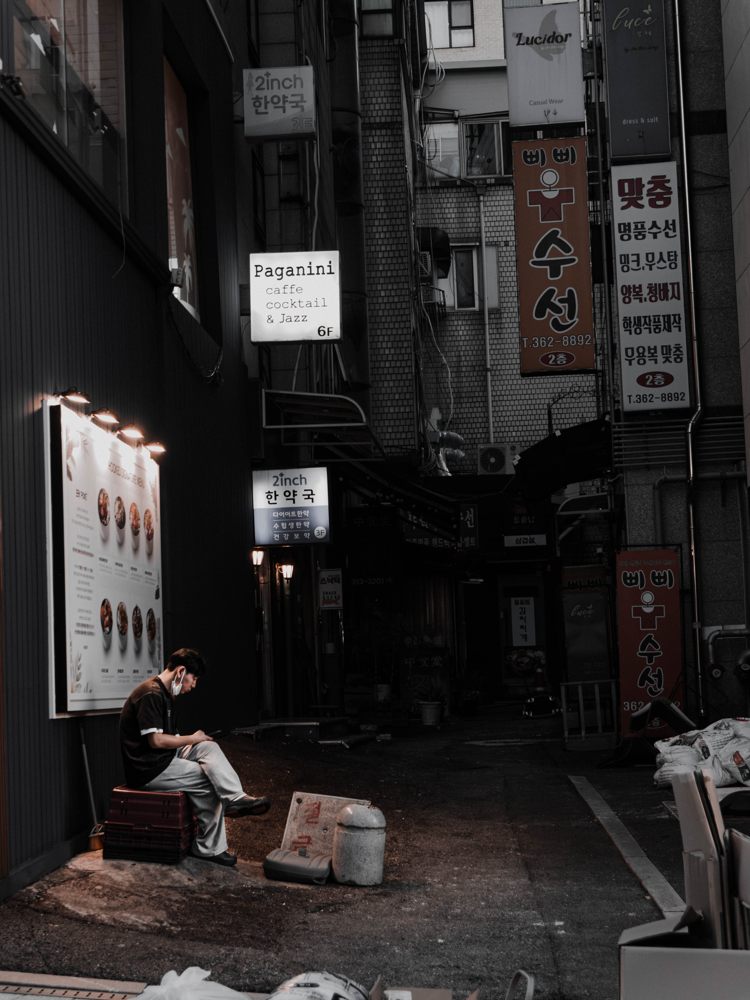
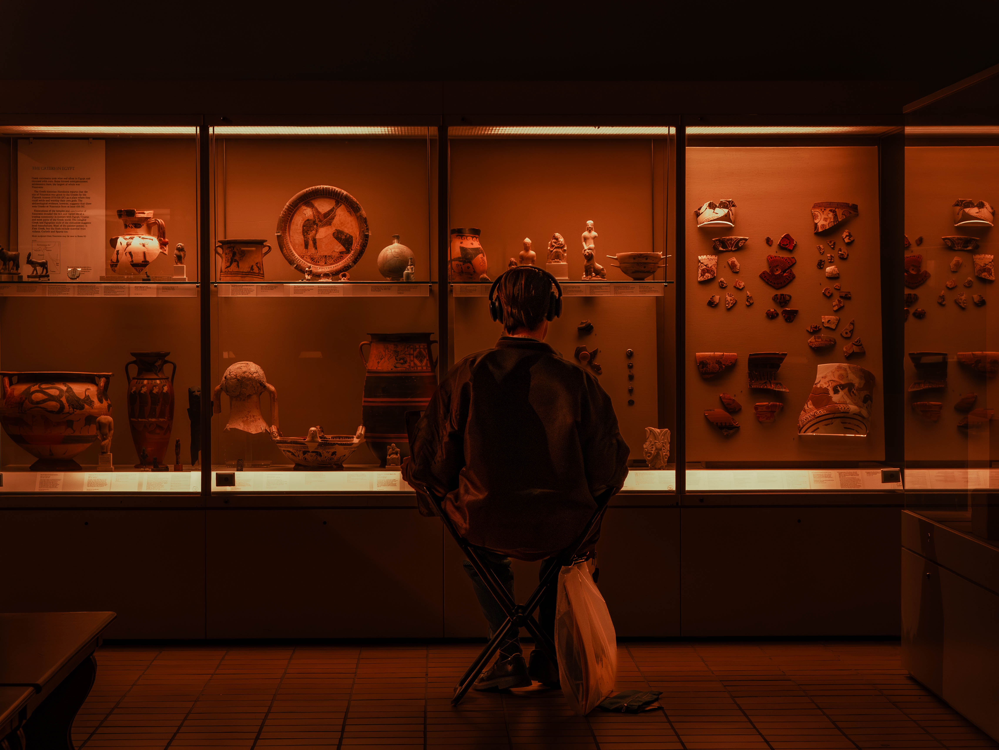
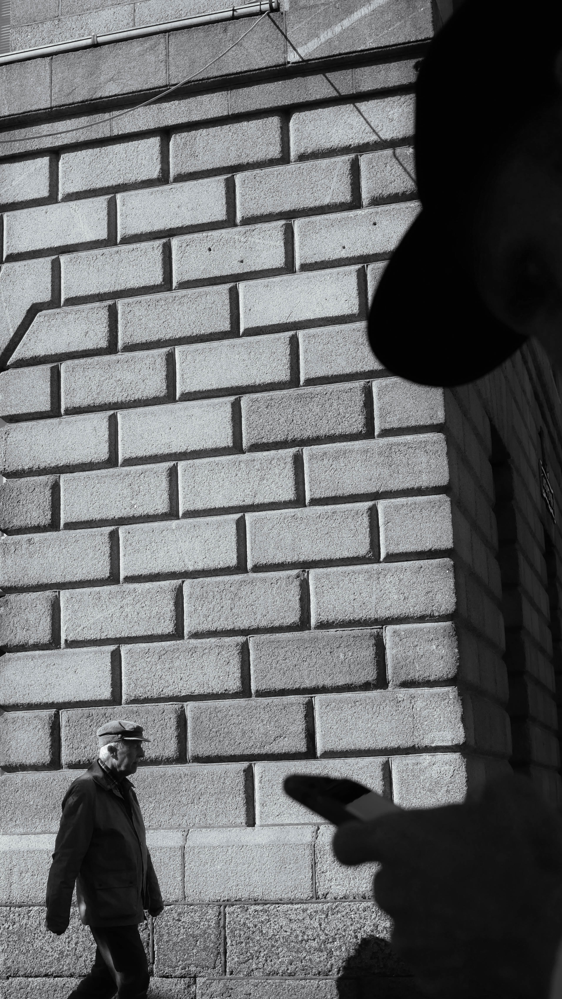
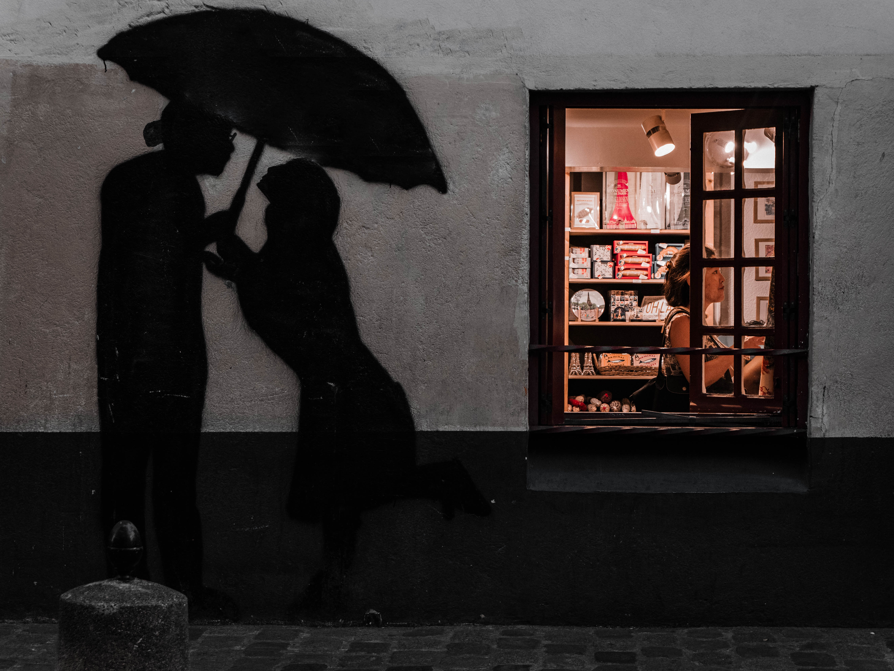
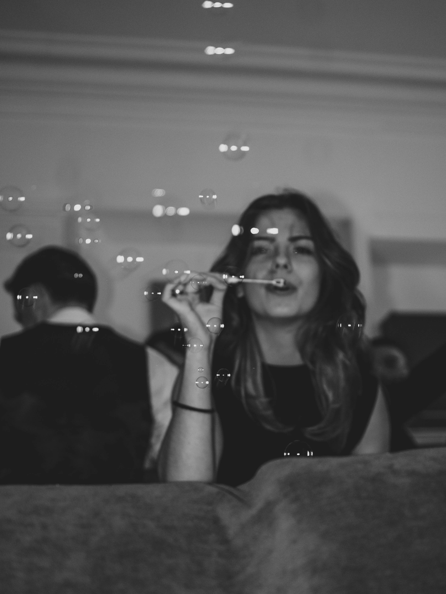
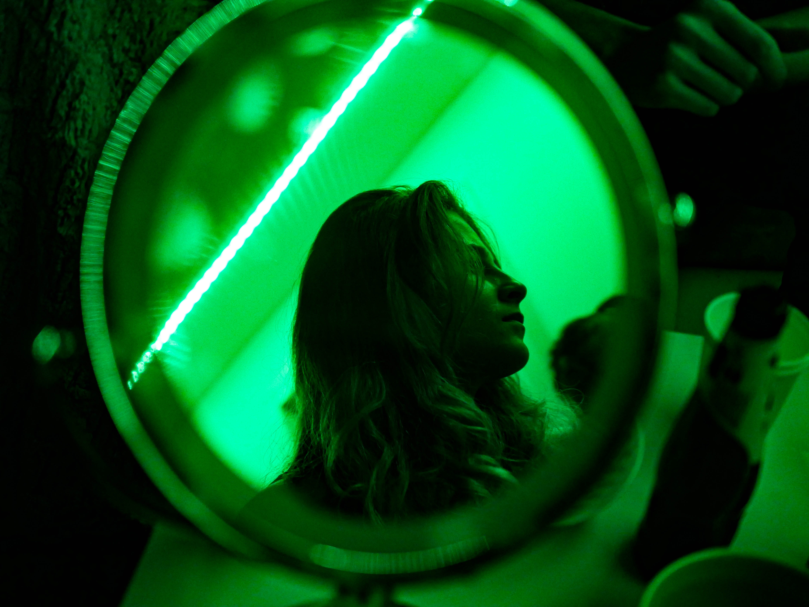
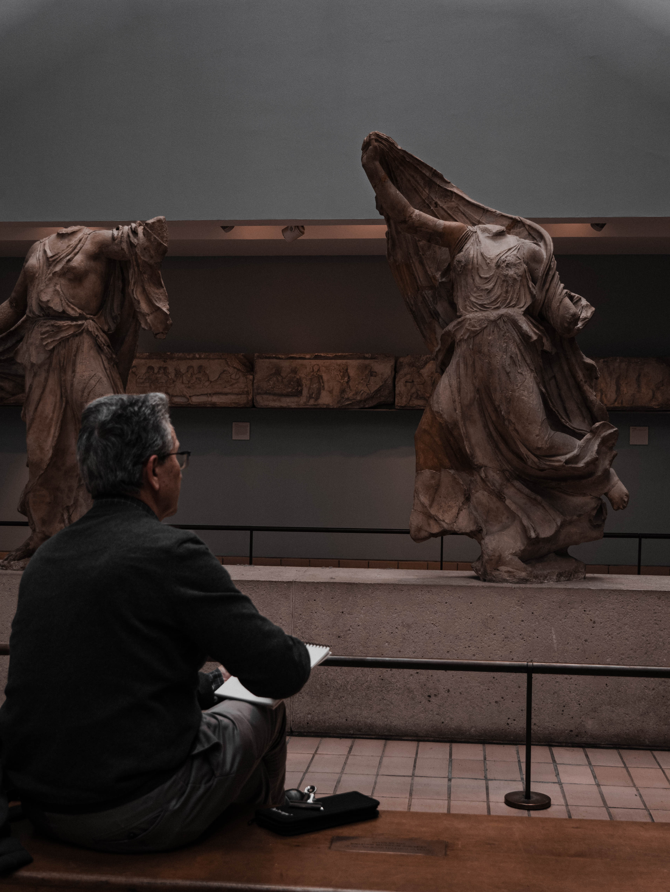
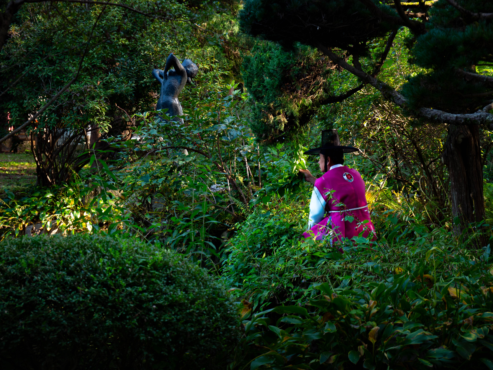

Process Notes · Thresholds · May 2026
What Élégies Oubliées
already does to the reader —
and what Thresholds continues.
This document was written alongside Thresholds, not after it. It is not a retrospective justification — it is a record of the reasoning as it developed, including the moments where the framing changed.
It traces three things: how the thesis sharpened over the course of the work; how each chamber came to embody its concept formally, not just thematically; and on what criteria I selected passages and paired each text with a photograph. The sections on curation and pairings are probably the most useful to read first — they show the decisions in their most concrete form. The thesis section is for those who want to understand why those decisions were made.
The thesis From resonator to enaction
The project began with a discomfort I could not immediately name. While rereading Élégies Oubliées — my own collection — I kept noticing how quickly a literary image could become fixed once it received a visual counterpart. A face acquired a face. A place acquired a place. Reading leaves room for uncertainty; illustration tends to close it. I did not want to illustrate. I wanted to stay inside the uncertainty.
That is the origin of Thresholds. It is not a portfolio designed around a thesis — the thesis is what emerged from trying to understand what I was already doing intuitively. What I was refusing was the process W.J.T. Mitchell calls iconisation: the fixing of an authorised image onto a text, which gradually replaces the reader's singular, incomplete inner image with a collective and definitive one. What I was trying to build instead was a resonator — a device that brings a textual fragment and a photographic fragment into relation without either one closing the other's reading.
The distinction between the two framings matters: Thresholds is not an anti-adaptation. It does not protect the reader's inner image by withholding images. It uses images — but images that maintain the distance rather than collapse it. The three chambers are three different ways of organising that distance.
The reframing that changed everything came when I re-read the book not as literary substrate but as a theoretical object:
Élégies Oubliées stages media that look back — photographs whose figures shift position, cassettes whose story becomes the listener's own, footage that transfers grief onto the viewer. Thresholds is the extension of this poetics into interface: not an illustration of the book, but its continuation by other means.
This shift from a defensive framing (protecting the reader's inner image) to an offensive one (enacting what the book already does) has concrete consequences for the curation of passages and for the pairings — see sections III and IV.
The references below are the authors who helped me understand what I was already doing. I have listed them in order of structural importance to the project — not because they were read in that order, but because that is how they function in the argument.
Three phenomenological chambers Each chamber formally embodies its concept
The guiding principle: the visual grammar remains constant — same palette, same grain, same typography — only the behaviour changes. What differentiates the chambers is not their appearance, but what the reader is allowed to do with time. The three operational principles correspond to the three canonical dimensions of lived experience in Merleau-Ponty's sense: spatial, temporal, intersubjective.
Passage curation Anchors and echoes — not all passages carry the same weight
My first selection of passages had a flaw I took time to name: they were beautiful sentences, not bearing moments. Atmospheric descriptions — pretty, wintry — that do nothing. The moments that sustain the thesis are of a different nature: they enact something. Someone sees their own double. A photograph changes. A cassette restarts. Someone says: Sometimes, the right place is a person.
I identified three criteria for choosing a passage:
- Event over description. Prefer a passage where something happens over atmospheric description.
- The double edge. The passage must work twice: on first reading (it intrigues), and on expert reading.
- An invitation to the image, not an image caption. The right passage invites a photograph without prescribing it. Wrong: "a silhouette in the driving rain" — the image is too supplied. Right: "a silhouette a hundred metres away. She was walking, but she was moving further" — the image is summoned as lack.
The chosen structure is an anchor / echo hierarchy: two anchors per chamber — the bearing passages, more present, that hold the chamber — and three to four echoes, more discreet, atmospheric, that dim when an anchor is hovered. The imbalance is intentional: it creates two levels of reading. Anchors are accessible to the passing visitor. Echoes reward the second reading — exactly like a listener who presses rewind and hears the cassette differently.
— Isometric Rain, Élégies Oubliées. Said by an anonymous customer beneath the colonies' advertising screen. It folds space back onto the intimate — exactly what the project does with photographs and passages.
Passage / photograph pairings 18 pairs · 3 chambers · 2 anchors per chamber
Four principles guided each pairing.
- Obliquity over illustration. No photograph literally represents what its passage says. The pairings are not made by mimicry — they work by ritual gesture. The green mirror is not paired with the story's double because one sees a reflection, but because one sees a figure in the act of becoming other.
- I leaned toward black-and-white in Time — time as archive, grain as sediment. But I allowed colour where it carried the right charge: the amber of a long exposure, the warmth of a memory that hasn't yet faded. In Space and The Other, colour is admitted more freely, but always disciplined by composition rather than atmosphere.
- Anchors carry the most restrained images. Not the most virtuosic — the most held-back. These are photographs that demand a gaze, not photographs that seize it.
- Never the same operation twice. Each chamber alternates registers: interior / exterior, day / night, close / distant.

Sometimes, the right place is a person.
The marble hand does not reach the living hand. The gap between them is the place. What the protagonist understands too late beneath the colonies' advertising screen: the right place was not Mars.

Dozens of copies of herself lay scattered across the floor, like shattered replicas of a fragmented reality.
Empty dresses, repeated forms, the sole vendor at the centre — the stratigraphy of the dead replicas on the hill of the 9th planet. The science-fiction narrative translated into traditional dress. Perfect obliquity.
His solitary silhouette dissolved into the ever-shifting urban architecture.
A photographer before he finds his subject. The geometry of the steps swallows him as the city does. The horizontal stripes of the floor echo the film strip.

The promise of a paradise elsewhere grew more distant, yet he clung to it desperately.
The man seated in the alley, his phone lighting his face: a man waiting, the signs promising something he no longer believes. He looks elsewhere.

A dark mass moved in the distance. It must have been enormous, given how far away it was.
The man seated before the shards faces something too large to take in at once — a mass that nonetheless looks back at him.

Every step was an escape, but also an assertion of his status as a perpetual outsider.
The photographer is inside the photograph — the phone's shadow in the foreground — and his subject ignores him. A photographer who discovers he is inside the photograph he thought he was taking.
Stories take time to get their teeth into us.
The woman's face blurs in the smoke — the cassette begins to bite. The time of the photograph (long exposure) is the time the voice takes to colonise the listener. The founding sentence of Thresholds.
You will always be my favourite memory.
Eyes closed, profile turned, desaturated architecture behind: everything fades except her. A woman speaking to the dead in a final clearing. The colour here is of the memory itself, not of presence — an assumed exception to the chamber's black-and-white rule.

A frozen image from simpler times, when the world was still comprehensible.
A couple painted on the wall — frozen in a gesture they will never finish — beside a window where someone lives. This is literally the photograph of someone looking at the image of someone who is gone.

Was it a dream, or a reality she could not escape?
Ephemeral bubbles, a figure half-absent in the frame. The dream that knows itself a dream — here suspended between two states, neither fully present nor fully gone.
This place is not really a café. It is an in-between space.
A woman at a table, another figure behind her already elsewhere. The café as threshold — a space between arrival and departure, between presence and absence. The other figure looks away, as if she belongs to a different time entirely.
Her silhouette turned into a blaze.
Three hands extend three matches. In the story, a single match is lit in solitude. Collective ritual against solitary sacrifice.

You… you're not real…
Profile against a circular field of green light: a figure in the act of becoming other. A woman facing her own double — captured from inside the mirror.
Her eyes, a deep blue, seemed to pierce through the photograph, as if she were watching Jack with unsettling intensity.
The gaze pressed against the stone, the eye that follows you: a portrait that cannot be released. The photograph that looks back — this image carries the poetic anchor of the entire collection.

We are not so different, you and I. We observe, we learn, we try to understand.
A man seated, sketching marble figures whose heads are missing. The act of careful observation before what is incomplete — attention as a form of witness. The Other as methodological mirror.
Stay with me.
The monk at the foot of three golden Buddhas, candles lit — a small figure before something immeasurably larger. An invocation directed toward what cannot answer. When the Other is colossal, and one speaks to it anyway.
Everything is fine. I am here.
A woman holds a bouquet beneath monumental arches — like an offering to something not there. The bouquet is proof that someone came. The turned face says: not toward you.

A strange and haunting sensation overtook him, as though he were under the spell of an irresistible force.
A man in a mauve hanbok, back turned, facing a statue half-hidden in vegetation. A figure held by something he cannot name. The encounter in the garden.
Photographic method What the corpus says before any layout
My corpus has a coherence that the layout of Thresholds must make visible: I work obsessively with the back, the three-quarter figure, the face that withdraws. I almost never photograph someone looking directly into the lens.
This is not a style — it is a poetics. It corresponds exactly to what the book asks of the interface: never finishing the image, leaving half to the reader. The photograph that withholds its subject is structurally analogous to the text that withholds its resolution.
I identified two tensions in my corpus that inform the pairing choices:
Two tonal regimes. A cinematic black-and-white (man on a staircase, graffiti) and a highly saturated colour corpus, almost unreal (matches, green mirror). This tension became an axis of differentiation between the chambers: black-and-white is concentrated in Time as an archival mark, while colour — disciplined, never decorative — is admitted in Space and The Other.
The presence of the face-toward-void. Many of my photographs frame a figure before a device that returns the gaze: a statue, an altar, a mannequin, a stained-glass window, a shopfront. This grammar is exactly that of the book: figures that look at what looks. It is the grammar of The Other, and it was already in the corpus before I looked for it there.
The corpus was sufficient. The next step was not to photograph more — it was to edit.